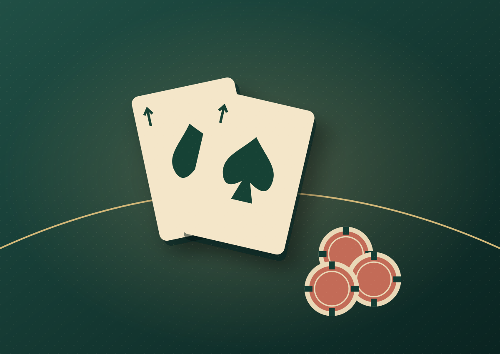
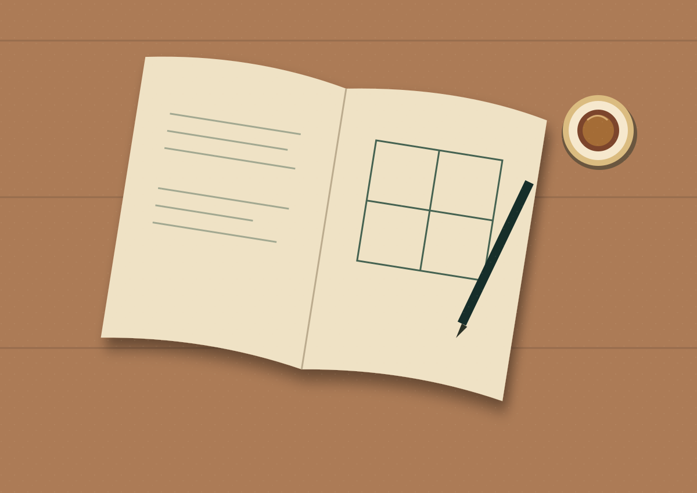

Nhân ngày rảnh rỗi nên cho phép tớ được xàm xí một tí. Các cậu có nhớ những phân cảnh đầu tiên và gần cuối bộ phim Crazy Rich Asians, khi đạo diễn sử dụng hai trò chơi là poker và mạt chược để miêu tả nhân vật Rachel Chu, một giáo sư kinh tế ở NYU không? Đối với tớ, đó là một dụng ý rất hay, khi lồng ghép hai bài học vỡ lòng trong kinh tế học (nói đúng hơn là behavioral economics và game theory) để dẫn dắt và kết thúc một bộ phim hài tình cảm với mô típ quen thuộc về một anh chàng nhà giàu và một nàng lọ lem: loss aversion (tâm lý sợ mất mát) và Nash equilibrium (cân bằng Nash).
Ở đầu phim, Rachel sử dụng một ván poker để giảng cho sinh viên về cách con người ra quyết định khi đối mặt với rủi ro mất mát. Đối thủ của cô dù có lợi thế stronger hands nhưng cuối cùng vẫn bỏ bài, bởi anh ta quá sợ đánh mất những gì mình đang có.
Playing not to lose, instead of playing to win.

Tớ khá thích cách phân biệt này. Bởi có những lúc chúng ta nghĩ rằng mình đang lựa chọn chiến lược tốt nhất, nhưng thực ra chỉ đang cố tránh một kết quả mà mình không muốn đối mặt. Và sự khác biệt ấy trở nên thú vị hơn nhiều khi người ta không còn chơi poker bằng tiền, mà chơi bằng tình yêu, gia đình và những thứ chẳng thể dễ dàng quy đổi ra một con số. Đến cuối phim, đạo diễn lại sử dụng một ván mạt chược để kể tiếp câu chuyện ấy.
Coi như việc đối đầu giữa Rachel và bà mẹ chồng giàu nứt đố đổ vách Eleanor Young là một trò chơi đi. Ban đầu Rachel chơi không phải để chiến thắng, mà cô ấy chơi để không thua. Cô mong muốn rằng mình vừa có thể làm vừa lòng gia đình Nick Young, vừa có thể giữ được lập trường của bản thân.
Một mong muốn nghe có vẻ rất hợp lý, nhưng vấn đề ở đây là mục đích giữa các bên tham gia trò chơi xung đột với nhau. Eleanor muốn Nick trở về tiếp quản cơ nghiệp gia đình và kết hôn với một người xứng đôi vừa lứa, ít nhất là về mặt văn hóa và xuất thân. Trong thế giới của bà, hôn nhân không chỉ là chuyện hai người yêu nhau, mà còn là trách nhiệm với gia đình, truyền thống và những kỳ vọng đã tồn tại qua nhiều thế hệ.
Còn Rachel thì không thuộc về thế giới ấy, dù là một giáo sư kinh tế ở NYU, độc lập, thông minh và có sự nghiệp riêng, có thể tự đứng trên đôi chân của mình, nhưng chừng đó vẫn không để để trở thành người mà Eleanor muốn con trai mình lấy làm vợ.
Sau khi Rachel nhận ra rằng cô ấy sẽ chẳng thể làm vừa lòng Eleanor, và rằng nếu tiếp tục theo chiến lược cũ thì sẽ chẳng có bên nào thực sự thắng, cô đưa ra một quyết định khác: từ bỏ Nick.
Hình ảnh Rachel nhả ra quân bài mà cô biết rằng với nó Eleanor sẽ thắng là một hình ảnh ẩn dụ rất hay.
Bởi thực tế, Rachel đã rút được quân tám tre, quân bài giúp cô hoàn thành thế bài chiến thắng. Cô hoàn toàn có thể giữ lấy chiến thắng ấy, nhưng cuối cùng lại chủ động đánh ra để Eleanor giành phần thắng. Quân bài đó, theo tớ, cũng chính là Nick.
Rachel biết rằng nếu Nick lựa chọn cô, anh ấy có thể sẽ mất gia đình, và đây là điều cô không hề muốn. Chính vì vậy, cô quyết định từ bỏ. Giờ thì không phải vì cô sợ thua nữa, mà là vì cô thực sự yêu Nick.
Có một sự khác biệt khá lớn giữa việc từ bỏ vì không thể thắng và việc chủ động không nhận lấy chiến thắng mà mình hoàn toàn có khả năng giành được. Rachel không còn playing not to lose nữa. Và tớ nghĩ đây mới là điều khiến cảnh mạt chược trở nên đặc biệt. Cô ấy không đánh bại Eleanor bằng cách chơi giỏi hơn, mà bằng việc cho Eleanor thấy rằng có những thứ quan trọng hơn chuyện ai thắng ai thua.
Về phía Eleanor, bà cũng hiểu rằng nếu Nick bị buộc phải lựa chọn gia đình, rất có thể trong suốt quãng đời còn lại anh sẽ oán trách bà vì đã khiến mình mất đi người phụ nữ mà anh yêu. Giữ được con trai ở bên cạnh nhưng để anh ấy phải sống trong sự dằn vặt, liệu đó có thực sự là một chiến thắng?
Đây là lúc tớ thấy câu chuyện trở nên thú vị hơn nếu thử nhìn nó dưới góc độ một payoff matrix.
Giả sử chúng ta đơn giản hóa trò chơi này thành một ma trận 2×2, trong đó Rachel có hai chiến lược là tiếp tục ở bên Nick hoặc từ bỏ, còn Eleanor có hai chiến lược là chấp nhận Rachel hoặc tiếp tục ngăn cản. Mỗi tổ hợp chiến lược sẽ dẫn đến một kết quả, với payoff khác nhau cho từng người.
Ban đầu, trong cách Eleanor nhìn nhận trò chơi, việc ngăn cản Rachel dường như mang lại payoff cao hơn. Bà tin rằng nếu Rachel rời đi, Nick sẽ quay trở về với gia đình, mọi thứ lại trở về đúng vị trí của nó. Ngược lại, chấp nhận Rachel đồng nghĩa với việc bà phải nhượng bộ và từ bỏ những kỳ vọng dành cho con trai.
Nhưng có một vấn đề trong cách Eleanor tính toán: bà đã đánh giá sai payoff của chính mình, bởi bà chưa tính hết cái giá mà Nick, và cả mối quan hệ mẹ con, có thể phải trả.
Về phía Rachel, ngay cả kết quả tưởng như tốt nhất là được ở bên Nick cũng chưa chắc đem lại payoff cao nhất. Bởi nếu chiến thắng ấy đồng nghĩa với việc Nick phải đánh đổi gia đình, thì hạnh phúc của anh cũng là một phần trong những gì cô phải tính đến.
Và rồi Rachel đánh ra quân tám tre.

Điều thay đổi sau nước đi ấy không đơn giản chỉ là chiến lược của Rachel, mà còn là information mà Eleanor có được.
Bằng cách chủ động từ bỏ một chiến thắng đã nằm trong tay, Rachel cho Eleanor thấy rằng cô không phải người chỉ quan tâm đến hạnh phúc và nhu cầu của bản thân như bà từng nghĩ. Cô ấy cho bà thấy rằng dù lớn lên trong cái xã hội đề cao tính cá nhân thì cô k hề bị Americanize mà vẫn giữ được những giá trị truyền thống của văn hóa Á Đông. Quan trọng hơn, Eleanor nhận ra rằng việc tiếp tục ngăn cản Rachel chưa chắc đã giúp bà giữ được Nick, ít nhất là theo cách bà thực sự mong muốn.
Nếu thử đặt lại các kết quả vào payoff matrix, chúng ta sẽ thấy thứ tự ưu tiên của Eleanor có lý do để thay đổi. Trước đó, bà nghĩ ngăn cản Rachel sẽ giúp mình giữ được con trai, còn chấp nhận Rachel đồng nghĩa với việc đánh mất những giá trị mà mình muốn bảo vệ. Nhưng sau cuộc đối thoại, bà nhận ra rằng ngăn cản Rachel có thể khiến Nick xa cách mình, trong khi chấp nhận cô lại có thể giúp Nick vừa có người yêu, vừa có gia đình.
Nói chính xác hơn một chút, không phải vì Rachel nhả ra một quân mạt chược mà payoff thực tế của tất cả các kết quả bỗng nhiên thay đổi. Điều thay đổi là beliefs của Eleanor về Rachel, về Nick và về hậu quả của từng lựa chọn. Khi có thêm thông tin, cách bà đánh giá expected payoff của các chiến lược cũng khác đi.
Trong game theory, tớ nghĩ có thể liên hệ chuyện này với signaling, cụ thể hơn là costly signaling: một hành động mà người thực hiện phải thực sự đánh đổi thứ gì đó, qua đó khiến người khác có thêm cơ sở để đánh giá động cơ của họ.
Rachel không chỉ nói rằng mình yêu Nick và quan tâm đến gia đình anh. Cô chủ động từ bỏ cơ hội kết hôn với anh, dù anh đã sẵn sàng lựa chọn cô. Đấy mới là thứ khiến hành động ấy có sức nặng.
Và khi những giả định của Eleanor thay đổi, best response của bà cũng có thể thay đổi theo. Chiến lược tốt nhất lúc này không còn nhất thiết là tiếp tục ngăn cản Rachel và Nick, mà có thể là tác hợp cho hai người, để Nick không phải lựa chọn giữa gia đình và người yêu.
Tớ thấy đây là một trong những điều thú vị nhất của game theory: đôi khi để thay đổi kết quả của một trò chơi, chúng ta không nhất thiết phải có thêm quyền lực hay một chiến lược phức tạp hơn. Chỉ cần khiến đối phương nhận ra rằng họ đang tính sai payoff ngay từ đầu.
Một quân mạt chược mà làm người ta phải tính lại cả bài toán. Và thế là chúng ta có cái kết đẹp ở cuối phim.
Đến đây thì tớ lại liên tưởng đến Nash equilibrium. Trong game theory, cân bằng Nash là trạng thái mà tại đó không người chơi nào có lợi khi đơn phương thay đổi chiến lược của mình, giả sử chiến lược của những người còn lại được giữ nguyên.
Tất nhiên, nếu xét nghiêm túc về mặt toán học thì muốn khẳng định cái kết của bộ phim là một cân bằng Nash, chúng ta còn phải xác định đầy đủ chiến lược và payoff của từng bên. Còn nếu chỉ nhìn dưới góc độ một người xem phim, tớ thấy đây là một cách khá thú vị để hiểu câu chuyện: khi cách đánh giá lợi ích của các bên thay đổi, họ có thể tìm được một kết quả mà trước đó chính mình cũng không nghĩ tới.
Rachel không cần phải đánh bại Eleanor. Eleanor cũng không cần phải loại bỏ Rachel. Và Nick thì không phải lựa chọn giữa người yêu và gia đình. It's a win-win-win situation for all players, khi họ thôi nhìn cuộc đối đầu như một zero-sum game, nơi chiến thắng của người này đồng nghĩa với thất bại của người khác, sang một positive-sum game, nơi các bên có thể cùng đạt được lợi ích mà không nhất thiết phải đánh đổi bằng sự mất mát của nhau.
Đó là phim, tuy nhiên, cuộc đời là một trò chơi vô cùng phức tạp. Để tìm được cân bằng Nash trong những trò chơi ngoài đời thực, nếu chúng ta thực sự mô hình hóa được chúng, chắc chắn là cực kỳ khó khăn. Bởi ngoài đời chẳng ai đưa cho chúng ta một bảng payoff rõ ràng trước mỗi quyết định. Chúng ta không biết chính xác người khác muốn gì, họ sẵn sàng đánh đổi những gì, và liệu những gì họ nói có thực sự là những gì họ nghĩ. Chưa kể con người không phải lúc nào cũng hành động một cách rational. Đôi khi chỉ một chút ego, một nỗi sợ, một định kiến, hay đơn giản là việc hiểu sai ý nhau cũng đủ khiến hai người đưa ra những quyết định mà sau đó chính họ cũng không giải thích nổi. Nhưng tớ tin rằng càng có nhiều kiến thức, càng có nhiều trải nghiệm, việc hiểu và giải quyết những bài toán như thế sẽ trở nên dễ dàng hơn rất nhiều.
Tớ nhớ hồi đi làm ở Bamboo, giờ nghỉ trưa thấy sếp tớ đang ngồi chăm chú đọc về game theory với behavioral economics. Tớ hỏi thì sếp bảo đọc để chuẩn bị chiều còn họp.
Đấy :))))

Một cuộc họp công ty nghe thì chẳng liên quan gì đến một ván mạt chược trong phim tình cảm, nhưng nghĩ kỹ lại cũng có khá nhiều điểm tương đồng. Mỗi người đều có mục tiêu, lợi ích và những thứ mình không muốn đánh mất. Đôi khi hiểu được người khác đang muốn gì còn quan trọng hơn việc chứng minh mình đúng.
Tớ thích việc những thứ học được trong sách vở lại có thể áp dụng để quan sát những chuyện hết sức bình thường như vậy. Học không phải cứ ngồi trên ghế nhà trường mới là học. Các cậu có thể học bất cứ đâu, bất cứ thời điểm nào, từ bất cứ thứ gì. Một cuốn sách, một cuộc họp, một bộ phim, hay thậm chí là một cuộc tranh luận rất xàm xí nào đó. Thế nên đừng dừng việc học lại nhé.
Anw, econs là kiểu lai giữa tâm lý học, triết học, toán học, thống kê,... vân vân và vân vân. Học econs là để hiểu thế giới này vận hành thế nào, hay chính xác hơn là hiểu cái xã hội này vận hành thế nào, chứ không phải chỉ để điều hành một doanh nghiệp hay để ngồi chơi chứng khoán.
Vì sao con người hợp tác? Vì sao họ cạnh tranh? Vì sao có những lúc điều tốt nhất cho một cá nhân lại không phải là điều tốt nhất cho cả tập thể? Và tại sao những người thông minh đôi khi vẫn đưa ra những quyết định rất khó hiểu? Đối với tớ, cái thú vị của economics nằm ở những câu hỏi như thế.
Nó cho mình thêm một cách để nhìn nhận thế giới. Tớ thấy khá thú vị khi những thứ tưởng chẳng liên quan gì đến nhau, từ việc một doanh nghiệp quyết định giá bán, một quốc gia xây dựng chính sách, cho đến việc một người chấp nhận chịu thiệt để người khác được hạnh phúc, đều có thể được đặt dưới góc nhìn của incentives, trade-offs hay opportunity cost.
Tất nhiên, không phải cái gì cũng có thể giải thích bằng một mô hình. Nhưng tớ vẫn tin rằng càng hiểu thêm một chút về cách thế giới vận hành, mình sẽ càng có nhiều cơ sở để đưa ra những quyết định tốt hơn.
Cơ mà học economics không có nghĩa là biết kinh doanh giỏi, và càng không có nghĩa là biết dự đoán thị trường tài chính đâu nhé. Thế nên đừng ai hỏi tớ mua gì bán gì, tiền này đang tăng có nên mua không, cổ phiếu hãng kia có nên mua không. Tớ có thể ngồi phân tích cả buổi về việc tại sao Rachel Chu lại đánh ra quân mạt chược cho Eleanor thắng, nhưng bảo tớ dự đoán ngày mai cổ phiếu nào tăng thì cái này tớ chịu. Thật đấy :))))))